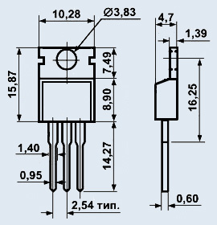

Транзистор irl3705n
Транзистор IRL3705N мощный, n-канальный, МОП (MOSFET). Предназначен для использования в источниках вторичного электропитания, в регуляторах, стабилизаторах и преобразователях, схемах управления электродвигателями и других блоках и узлах радиоэлектронной аппаратуры.

Рис. 1 - Габаритные размеры транзистора IRF840
Выпускаются в пластмассовом корпусе с жесткими выводами. Маркировка транзистора указывается на корпусе. Тип корпуса - ТО-220AB.

Рис. 2 - Цоколевка транзистора IRL3705N
| Параметр | Значение |
|---|---|
| Максимальное напряжение сток-исток Uси max, В | 55 |
| Максимальный ток сток-исток при 25°С Iси max, А | 89 |
| Максимальное напряжение затвор-исток Uзи max, В | ±16 |
| Сопротивление канала в открытом состоянии Rси вкл , Ом | 0,01 |
| Максимальная рассеиваемая мощность Pси max, Вт | 130 |
| Крутизна характеристики, S | 50 |
| Пороговое напряжение на затворе, В | 2 |
| Диапазон рабочих температур | от -55 до +150 °C |